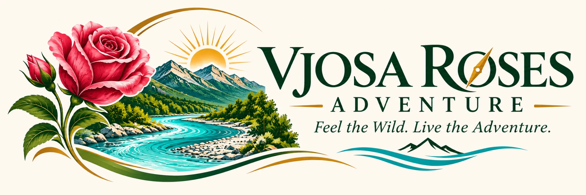

Bënja Bridge & Thermal Baths
The historic stone bridge beside the Lengarica River and thermal waters.

Nature · Adventure · Culture · Wellness
Untouched landscapes
Discover the Vjosa region
People, culture and local flavors
The thermal baths of Bënjë
A first look at the landscapes and experiences around Përmet. Activities and availability will be confirmed soon.
The historic stone bridge beside the Lengarica River and thermal waters.

Real adventurers on the Vjosa River. Guided trips are subject to river conditions.

The iconic limestone landmark at the heart of Përmet.

Mountain forests and authentic hiking landscapes.

A wide view of the Vjosa valley and Këlcyra gorge.

The dramatic rock formations and river canyon near Bënja.
Suggested experiences — itineraries, availability and prices are confirmed directly with our team.
Other operators publish Vjosa rafting around €25–35 per person, kayaking €25–35, and rafting with an overnight camp from €59. Final quotes and availability on WhatsApp. Rafting price source · Kayaking source · Overnight tour source.
Public market examples: €25–35/person · not our confirmed rate
A river adventure in the Vjosa valley. Route and duration on request.
Price on requestRequest AvailabilityDiscover Bënja Bridge, thermal waters and the Lengarica landscape.
Price on requestRequest AvailabilityExplore Guri i Qytetit, local scenery and the character of Përmet.
Price on requestRequest AvailabilityExplore scenic spots around the Vjosa valley and Këlcyra.
Price on requestRequest AvailabilityA proposed guided hike through the forests and mountain landscapes of Bredhi i Hotovës–Dangëlli National Park. Route and difficulty confirmed on request.
Price on requestRequest AvailabilityExplore Frashër and the Frashëri Brothers' house-museum, subject to opening arrangements and local access.
Price on requestRequest AvailabilityA nature outing toward Sopot Waterfall, with route, weather and local access checked before confirmation.
Price on requestRequest AvailabilityAsk us about local stays and food experiences. Partner options, menus, inclusions and prices are confirmed individually.
Guesthouses and hotel options based on your dates, group size and preferences. No property is reserved until confirmed.
Price on requestAsk About StaysExplore local dishes and dining options, with menus and dietary needs discussed before booking.
Price on requestAsk About FoodFrom the Vjosa River to mountain landscapes and local traditions, discover the spirit of Përmet.
Authentic photos of Përmet, Vjosa and the surrounding region. Credits appear on each photo.
The historic stone bridge beside the Lengarica River and thermal waters.
Real adventurers on the Vjosa River. Guided trips are subject to river conditions.
The iconic limestone landmark at the heart of Përmet.
Mountain forests and authentic hiking landscapes.
A wide view of the Vjosa valley and Këlcyra gorge.
The dramatic rock formations and river canyon near Bënja.
More about our story and team will be added soon.
Message us on WhatsApp to ask about experiences and bookings.
WhatsApp: +355 68 534 8508Photographs are credited at their original source; the applicable licenses remain in force.